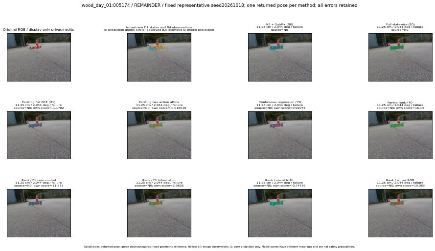

실선은 반환 자세, 초록 점선은 고정 기하 참조입니다. S는 영상 관측이 아닙니다. 점수는 모델별 의미가 다르며 보정된 안전 확률이 아닙니다. 개인정보 처리는 표시 사본에만 적용했습니다.
| 방법·seed | 위치 / 회전 / 공동성공 | 실제 출처 | 선택 후보 | 각 모델 자체 점수 |
|---|---|---|---|---|
| N0 | 11.25 cm / 2.044 deg / failure | N0 | N/A | N/A |
| E0 | 11.25 cm / 2.044 deg / failure | N0 | N/A | N/A |
| E0_REGENERATED | 11.25 cm / 2.044 deg / failure | N0 | E0_REGENERATED | N/A |
| POSEFIX_SUBPIX_PF_ANCHOR | 4.106 cm / 1.753 deg / success | OTHER | N/A | N/A |
| POSEFIX_SUBPIX_YOLO_ANCHOR | 4.106 cm / 1.753 deg / success | OTHER | N/A | N/A |
| D1_H1_MLP_s20261018 | 11.25 cm / 2.044 deg / failure | N0 | N0 | -1.1702449321746826 |
| D1_H1_MLP_s20261019 | 11.25 cm / 2.044 deg / failure | N0 | N0 | -1.197700023651123 |
| D1_H1_MLP_s20261020 | 11.25 cm / 2.044 deg / failure | N0 | N0 | -0.8090213537216187 |
| D1_H1_PAIR_MLP_s20261018 | 11.25 cm / 2.044 deg / failure | N0 | N0 | -0.6194182634353638 |
| D1_H1_PAIR_MLP_s20261019 | 11.25 cm / 2.044 deg / failure | N0 | N0 | -0.9073086380958557 |
| D1_H1_PAIR_MLP_s20261020 | 11.25 cm / 2.044 deg / failure | N0 | N0 | -0.9098821878433228 |
| D1_H1_PAIR_ROLE_AFFINE_s20261018 | 11.25 cm / 2.044 deg / failure | N0 | N0 | -0.01801878586411476 |
| D1_H1_PAIR_ROLE_AFFINE_s20261019 | 11.25 cm / 2.044 deg / failure | N0 | N0 | -0.11909808963537216 |
| D1_H1_PAIR_ROLE_AFFINE_s20261020 | 11.25 cm / 2.044 deg / failure | N0 | N0 | -0.1120513528585434 |
| R_CONT_F0_s20261018 | 11.25 cm / 2.044 deg / failure | N0 | N0 | 0.9207491278648376 |
| R_CONT_F0_s20261019 | 11.25 cm / 2.044 deg / failure | N0 | N0 | 0.8934102058410645 |
| R_CONT_F0_s20261020 | 11.25 cm / 2.044 deg / failure | N0 | N0 | 0.7727575302124023 |
| R_ORDER_F0_s20261018 | 11.25 cm / 2.044 deg / failure | N0 | N0 | 16.14013671875 |
| R_ORDER_F0_s20261019 | 11.25 cm / 2.044 deg / failure | N0 | N0 | 7.260883331298828 |
| R_ORDER_F0_s20261020 | 11.25 cm / 2.044 deg / failure | N0 | N0 | -16.80508804321289 |
| R_ORDER_F1_ZERO_s20261018 | 11.25 cm / 2.044 deg / failure | N0 | N0 | 11.672880172729492 |
| R_ORDER_F1_ZERO_s20261019 | 11.25 cm / 2.044 deg / failure | N0 | N0 | 11.706979751586914 |
| R_ORDER_F1_ZERO_s20261020 | 11.25 cm / 2.044 deg / failure | N0 | N0 | 8.918424606323242 |
| R_ORDER_F1_s20261018 | 11.25 cm / 2.044 deg / failure | N0 | N0 | 2.9635400772094727 |
| R_ORDER_F1_s20261019 | 11.25 cm / 2.044 deg / failure | N0 | N0 | 4.516581058502197 |
| R_ORDER_F1_s20261020 | 11.25 cm / 2.044 deg / failure | N0 | N0 | 4.868950366973877 |
| V_ORDER_NULL_s20261018 | 11.25 cm / 2.044 deg / failure | N0 | N0 | -0.7475929260253906 |
| V_ORDER_NULL_s20261019 | 11.25 cm / 2.044 deg / failure | N0 | N0 | 1.7340598106384277 |
| V_ORDER_NULL_s20261020 | 11.25 cm / 2.044 deg / failure | N0 | N0 | 0.5473018884658813 |
| V_ORDER_RGB_s20261018 | 11.25 cm / 2.044 deg / failure | N0 | N0 | 10.082552909851074 |
| V_ORDER_RGB_s20261019 | 11.25 cm / 2.044 deg / failure | N0 | N0 | 3.367701530456543 |
| V_ORDER_RGB_s20261020 | 11.25 cm / 2.044 deg / failure | N0 | N0 | -4.791090965270996 |